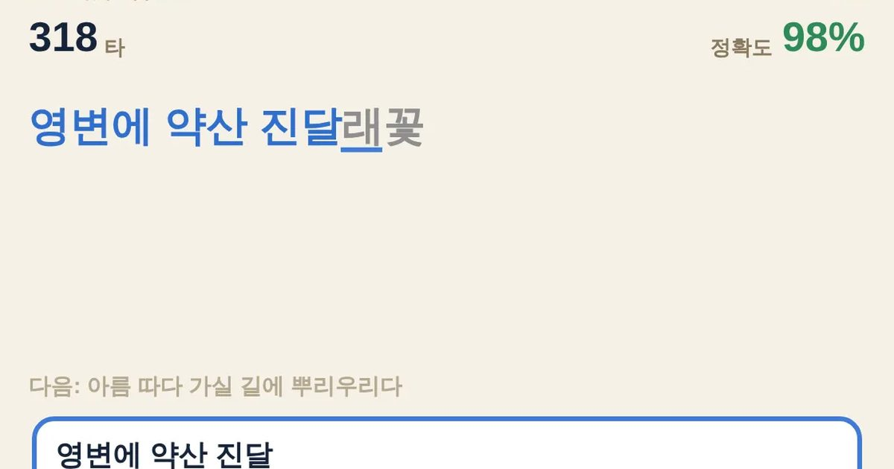

글 타자 · 타자 빨리 치기
Speed Typing
타자 연습 · 문장무료설치 없음폰 · PC
▶ 지금 바로 하기로그인 없이 브라우저에서 바로 시작돼요
어떤 게임인가요?
청산별곡 · 진달래꽃 · 서시 같은 옛시와 명시, 속담, 학생이 알아 두면 좋은 상식 문장을 그대로 따라 쳐요. 1분에 몇 타인지(타수)와 정확도를 재 줘요. 치다 보면 시도 상식도 저절로 외워져요.
목표 · 위에 나온 문장을 정확하고 빠르게 따라 쳐서 타수와 정확도 올리기.
게임 방법
- 위에 나온 문장을 아래 칸에 그대로 쳐요
- 맞은 글자는 파랗게, 틀린 글자는 빨갛게 보여요
- 다 쳤으면 엔터 · 끝까지 맞게 치면 저절로 다음 줄
- 타수(1분에 누른 자판 수) × 정확도가 점수예요
공략 팁
- 빨리보다 정확히 · 틀리면 점수가 정확도만큼 깎여요
- 자판을 보지 않고 치면 타수가 금방 올라요
- 옛시와 명시는 소리 내어 읽듯 리듬을 타면 쉬워요
- 300타면 평균 이상, 500타면 번개 손가락
 한방 벽돌깨기
한방 벽돌깨기 별빛 편대
별빛 편대 오목
오목 왕머리 축구
왕머리 축구 탑 쌓기
탑 쌓기 스도쿠
스도쿠